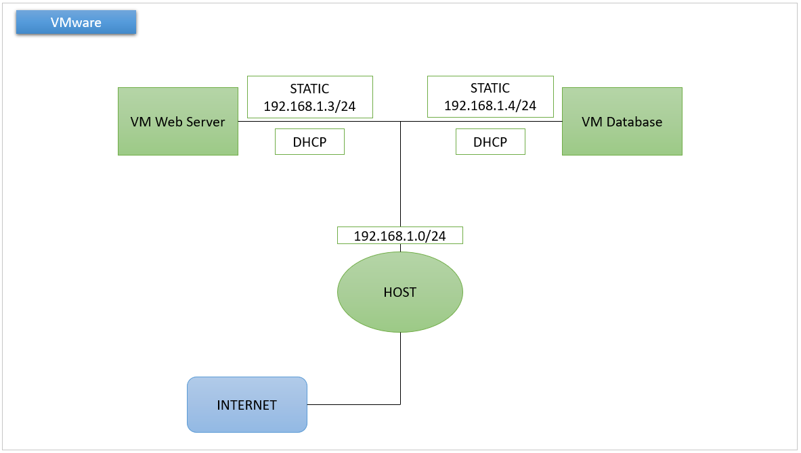

Wordpress | Config Web Server && Database

Hal yang perlu di siapkan :
Bahan :- Membuat 2 vm, web_server dan database
- Setting network
- Adapter 1 Ada 2 opsi :
- NAT Adapter
- Bridge Adapter
- Adapter 2
- Host Only Adapter
Config Web Server
- Sebelum mulai, kita masuk ke root dan update system terlebih dahulu
- Install apache2
- Cek status apache2
- Setting IP static
- ens33 dhcp nya kita buat true karena kita akan menggunakan dhcp sebagai sumber internet.
- ens34 ini adalah host only, jadi kita setting untuk dhcp false dan kita masukkan IP address sesuai dengan IP address dari host only vm kita.
- Apply netplan
- Cek hostname
- Cek apache2 di web browser menggunakan IP address yang telah kita cek sebelumnya
- Install php
- Cek php menggunakan IP address kita sebelumnya
- Install mysql client
| apt update |
| apt install apache2 |

| sysemctl status apache2 |

| nano /etc/netplan/00-installer-config.yaml |
Buat seperti baris berikut :

| netplan apply |
| hostname -I |

Disini terdapat 2 IP address yaitu IP dhcp dan IP host only yang bisa kita gunakan nantinya untuk mengakses wordpress
| https://ip-address |

| apt install php php-mysql |
Tambahkan baris berikut :

| http://ip-address/info.php |

| apt install mysql-client |
Config Database
- Sebelum mulai, kita masuk ke root dan update system terlebih dahulu
- Install mysql-server
- Cek status mysql
- Install php
- Konfigurasi php
- Setting IP static
- ens33 dhcp nya kita buat true karena kita akan menggunakan dhcp sebagai sumber internet.
- ens34 ini adalah host only, jadi kita setting untuk dhcp false dan kita masukkan IP address sesuai dengan IP address dari host only vm kita.
- Apply netplan
- Cek hostname
- Cek php menggunakan IP address kita
- Config mysql
- Untuk cara install wordpress bisa lihat Disini
| apt update |
| apt install mysql-server |

| systemctl status mysql |

| apt install php php-mysql |

| nano /var/www/html/info.php |
Tambahkan baris berikut :

| nano /etc/netplan/00-installer-config.yaml |
Buat seperti baris berikut :

| netplan apply |
| hostname -I |

| http://ip-address/info.php |

| sudo nano /etc/mysql/mysql.conf.d/mysqld.cnf |
Ubah bind-address menjadi IP address vm database, lalu ctrl x dan y lalu enter